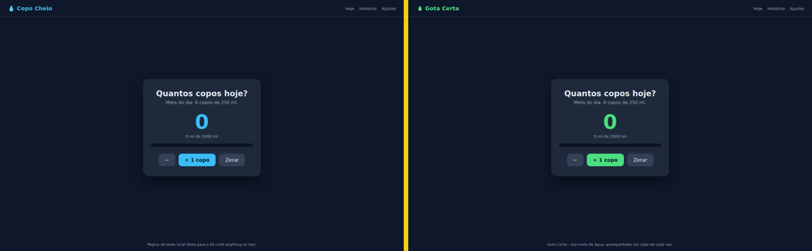
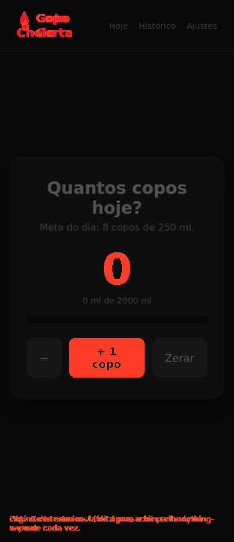

O Craft Anything estuda o original, manda um agente de IA construir a sua versão e confere se ficou parecida. Aqui você aprende a usar, vê o teste que fizemos e leva a régua para conferir com qualquer agente.
O Craft Anything é um programa aberto e gratuito que olha um site, app ou jogo, pede a um agente de IA (como o Claude Code) para escrever a sua própria versão do zero e compara o resultado com o original. Este guia ensina a instalar e usar com segurança, compara com o REA, outra ferramenta aberta que mostra como um programa funciona por dentro, e mostra um teste real feito aqui. O kit traz uma régua de semelhança e uma lista de funções para conferir a cópia com qualquer agente. Você precisa de um computador e de um agente de código logado; o kit pede Node.js e Python 3.
A ideia é antiga: em 2009, Markus Persson viu o jogo Infiniminer e fez a própria versão em cerca de uma semana, sem o código do original. Virou o Minecraft, e a Microsoft comprou a Mojang por US$ 2,5 bilhões em 2014. Hoje um agente de IA faz o trabalho pesado; o Craft Anything organiza esse trabalho.
Tira prints, mede cores, fontes e espaçamentos e lê o texto visível em três larguras de tela: notebook, tablet e celular.
Ele roda o seu agente de código (o Claude Code é o primeiro suportado) e pede uma versão nova, escrita do zero, com o seu nome e as suas cores.
Compara a sua versão com o original, lista o que ainda não bate e devolve ao agente, rodada após rodada, até ficar parecido.
Fonte: github.com/storytold/craft-anything — código aberto (MIT ou Apache-2.0), feito pela equipe do ArtCraft, versão 0.6.0 de 09/11/2026, ainda em "early alpha".
Você aponta o original, diz o que quer e aperta Start. Quando uma decisão é sua, ele pergunta em palavras simples.
Abre o original num navegador privado e registra o que um visitante vê, em 1440, 768 e 390 px.
O agente escreve um projeto novo, na linguagem que você pedir (ou na que ele achar melhor).
Compara as telas lado a lado e lista as diferenças. Para quando chega no "Good enough" (padrão 90%).
Você abre o resultado ou pede mudanças na caixa de baixo, e ele refina de novo.
Só usa o que um visitante vê: prints, texto visível, medidas, cores, fontes, menus abertos. Não lê código, arquivos nem o código-fonte da página. Ferramentas que olham por dentro são recusadas. Use sempre que o original não for seu.
Usa todas as ferramentas: lê o código e os arquivos do programa (com o Ghidra, se estiver instalado) e o JavaScript do site. Só para o que é seu ou que você tem permissão de examinar.
É uma regra sobre o que o Craft Anything oferece e recusa. O agente que você roda continua agindo como você, com as suas permissões. No nosso teste, o Claude Code construtor até leu as configurações pessoais da máquina. Para isolar de verdade, rode numa máquina ou pasta separada, sem senhas e sem chaves (veja a caixa-do-agente).
Para o Craft Anything e para o kit de conferência deste repositório.
Windows, macOS, Linux (Intel/AMD ou ARM) ou FreeBSD. Com Chrome, Edge, Brave ou Chromium instalado: ele precisa abrir um navegador para estudar sites.
Claude Code (o primeiro suportado), ou Copilot CLI e Grok pelo protocolo ACP. Ele usa o seu login; o Craft Anything nunca vê a sua conta.
Node.js 18 ou mais novo com Playwright (para a régua de semelhança) e Python 3 (para a lista de funções). Não precisa do Craft Anything.
Seis passos. O 4º é o mais importante: desligar o modo automático para ele pedir licença antes de rodar comandos.
Na página de versões do repositório, baixe o arquivo do seu sistema: .msi (Windows), .dmg (macOS), .AppImage, .deb ou .rpm (Linux). Confira o código SHA256 com o SHA256SUMS.txt da mesma página. Exemplo no Linux:
# Linux ARM64; em Intel/AMD troque aarch64 por x86_64 gh release download v0.6.0 -R storytold/craft-anything -p 'craft-anything-0.6.0-linux-aarch64.AppImage' -p 'SHA256SUMS.txt' grep linux-aarch64.AppImage SHA256SUMS.txt; sha256sum craft-anything-0.6.0-linux-aarch64.AppImage # os dois códigos têm de ser iguais; depois: chmod +x craft-anything-0.6.0-linux-aarch64.AppImage && ./craft-anything-0.6.0-linux-aarch64.AppImage
Sem o gh? Baixe pelo navegador em github.com/storytold/craft-anything/releases. Evite o Flatpak para estudar sites: ele não consegue abrir o navegador.
Se ainda não tem, instale e faça login com a sua conta (assinatura). O Craft Anything roda o seu claude do jeito que ele está.
# macOS e Linux curl -fsSL https://claude.ai/install.sh | bash claude # na 1ª vez, siga o login no navegador claude auth status # confere se está logado
No app: Settings → AI → Harnesses → Detect. Ele acha o Claude Code instalado. Pela linha de comando, craft-anything-cli doctor mostra o que está faltando.
Settings → Safety → Auto mode → desligado. De fábrica ele vem ligado: o construtor roda comandos (como npm install) sem perguntar. Desligado, aparece um cartão "Allow once / Always for this project / Don't allow" antes de cada tipo de ação nova. Instalar pacotes roda código no seu computador; só diga "sempre" para o que você confia.
Settings → General. O padrão é Documentos/Craft Anything. Cada projeto ganha uma pasta com craft.json (o pedido e o histórico), capture/ (o que ele viu no original), app/ (a sua versão) e checks/ (cada comparação).
Na tela Make: escolha Website, App ou Game, cole o endereço, deixe Clean room, escreva o que quer e aperte Start. Ou pela linha de comando (o AppImage também traz a CLI: ./craft-anything-0.6.0-linux-aarch64.AppImage --cli doctor):
craft-anything-cli rebuild https://example.com "Recreate this website" --clean-room craft-anything-cli rebuild https://example.com "Make the header blue" --continue-in "<pasta do projeto>"
Um bom teste para qualquer ferramenta desse tipo é um quadro branco de desenho aberto, como o Excalidraw: visual simples e muitas funções fáceis de conferir. Suba o "Good enough" em Settings para 95% e peça:
Make my own version of this whiteboard app and call it <NOME>. Keep the same drawing tools and
layout, but use my own name and colors.
Em português funciona igual: "Faça a minha própria versão deste app de quadro branco e chame de <NOME>. Mantenha as mesmas ferramentas de desenho e o mesmo layout, mas use o meu nome e as minhas cores." Use uma instância que você pode testar, nunca um site com login.
O kit gera essa lista com o "como testar" de cada função e reprova enquanto faltar prova: python3 conferir/funcoes.py gerar quadro-branco --nome "<NOME>" --saida checklist.md.
Com tudo funcionando, peça na caixa de mudanças: logo novo, cor roxa, nome em todo lugar. Primeiro funcionar, depois a cara: misturar os dois confunde o agente. O pedido pronto está em pedidos/3-mudanca-de-marca.md. O que importa é a experiência de usar, não o print.
Fatos conferidos em 10/11/2026 no README de cada repositório e na API do GitHub. Detalhes e fontes em COMPARACAO.md.
| Craft Anything | REA (Reverse Engineer Anything) | |
|---|---|---|
| O que faz | Estuda, manda construir e confere, tudo num app | Dá ao seu agente ferramentas para estudar programas; o agente explica com prova e pode escrever a sua versão |
| Quem constrói | Um agente que ele chama (Claude Code primeiro) | O agente que você já usa (Claude Code, Codex, Cursor, Gemini CLI…) |
| Como confere | Sozinho: telas em 3 larguras, até "Good enough" | Sem conferência visual pronta; o agente testa o que fez |
| Sala limpa | Padrão de fábrica | Não tem modo com esse nome |
| Olhar por dentro | Modo Deep (motores próprios + Ghidra) | É o forte dele: Hopper, Ghidra, IDA ou Kuna; .NET, Android, Electron, firmware… |
| Forma | App de janela + CLI + MCP | MCP + CLI (Node.js) |
| Licença | MIT ou Apache-2.0 | MIT |
| Criado | 31/10/2026 · ~26 mil estrelas | 14/04/2026 · ~450 mil estrelas |
| Maturidade | 0.6.0, "early alpha" | rea-agents 6.8.0 |
| É caixa isolada? | Não (o próprio README avisa) | Não: roda com as suas permissões |
O REA nasceu seis meses e meio antes, é de outro dono, em outra linguagem, e nenhum dos dois READMEs cita o outro. E o REA não "só mostra como funciona": o README dele diz que o agente pode construir uma versão para o seu projeto. A diferença real é de pacote: o Craft Anything junta tudo num app com a sala limpa ligada; o REA é a caixa de ferramentas de estudo mais funda, e a construção fica com o seu agente.
quer refazer um site, app simples ou jogo do seu jeito, sem ler código de ninguém, e quer a conferência pronta.
quer entender como uma função de um programa seu funciona por dentro: um algoritmo, um formato de arquivo, um app instalado.
já tem um agente e quer conferir qualquer cópia: semelhança nas 3 larguras e prova de cada função.
Computador Linux ARM64, Claude Code na assinatura, nenhuma chave de API. Original: uma página local de contador de água ("Copo Cheio"). Pedido: a mesma página com o nome "Gota Certa" e cor verde, em sala limpa.


doctor: saudável; achou Claude Code, Codex, Chromium.commands: 322 comandos (o README fala em 320).npm install sem perguntar.Saídas, comandos e detalhes: TESTE-AQUI.md.
Duas réguas que não dependem do Craft Anything nem do REA: uma mede se ficou parecido, a outra cobra prova de que funciona. Mais cinco pedidos prontos para colar no agente.
git clone https://github.com/inematds/craft-anything-vs-rea cd craft-anything-vs-rea npm install -g playwright && npx playwright install chromium # uma vez só
Passe o original e a sua versão (endereço ou arquivo .html). Sai uma tabela com estrutura (onde está cada coisa, ignora a cor), cor (se as paletas batem; só informa) e pixels iguais, mais os prints lado a lado e o mapa de diferenças.
node conferir/semelhanca.js https://original.exemplo minha-versao/index.html --meta 85 --saida conferencia # saída 0 = passou nas 3 larguras · 1 = alguma abaixo da meta · 2 = erro (página não abriu, 404…)
A régua não se engana com fundo escuro: duas páginas escuras diferentes têm mais de 90% dos pixels iguais, mas a estrutura fica abaixo de 50.
python3 conferir/funcoes.py modelos # quadro-branco, generico python3 conferir/funcoes.py gerar quadro-branco --nome "Rabisco" --saida checklist.md # o agente testa, marca [x] e escreve a prova em cada linha; depois: python3 conferir/funcoes.py conferir checklist.md # 0 = todas provadas · 1 = falta alguma
Quer um teste de função automático? conferir/exemplos/funcoes-contador.js é o que usamos no teste real; copie e troque os passos para o seu app.
Refazer só com o que um visitante vê.
O agente só para quando a régua passa.
Nome, logo e cor depois que funciona.
Cada função com prova, no formato do conferidor.
O teste completo, com as 16 funções.
bash tests/rodar.sh: mais de 30 verificações, sem internet.
O Craft Anything usa modelos locais só para perguntas e análise; para construir, ele precisa de um agente de código instalado. Se você quer tudo rodando na sua máquina, sem depender de modelo na nuvem, o caminho que já testamos é o REA com um harness local e um modelo aberto no Ollama.
Harness dsh + modelo aberto no Ollama + REA, tudo local. Abrir o guia
O agente tem que provar o que diz que entendeu; conferidor em Python. Abrir o guia
O guia do REA com um teste feito do zero. Abrir o guia
Roda qualquer agente numa caixa Docker descartável, sem rede e sem os seus .env. Abrir o guia
Site no estilo das suas referências, com um portão que confere a página. Abrir o guia
Mede os 5 padrões do site que traz cliente e diz o que consertar. Abrir o guia